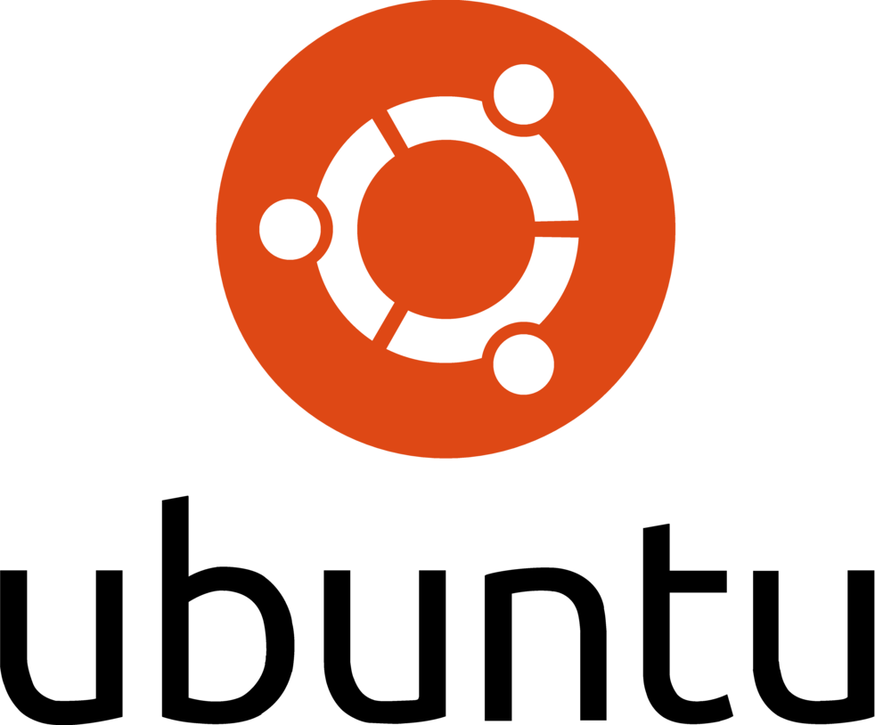
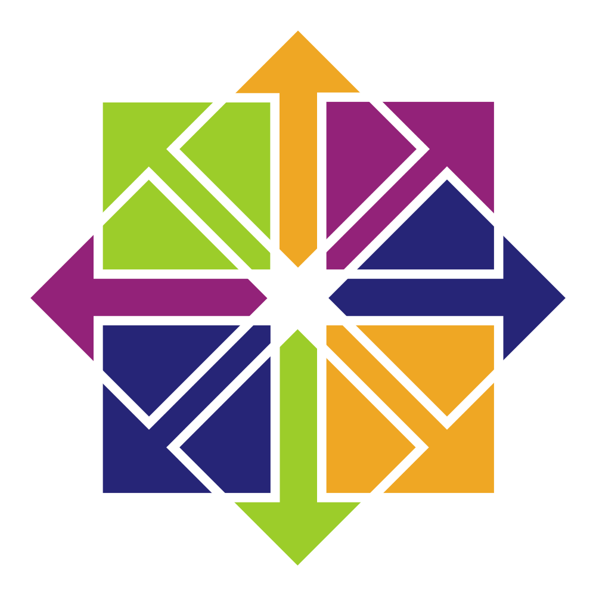

SKILLS
[sysadmin@wrkt]:~$ cat skills
Au cours de mes formations et de mes expériences, j'ai développé de nombreuses compétences en programmation, connaissances technologiques, mais également en gestion de projet informatique. Ci-dessous une répartition de ces compétences sous divers catégories :
# 1.Langages de programmation:

Programmation Shell

Programmation Python
Administration sous PowerShell

Programmation JavaScript

Développement web HTML5

Développement web CSS
# 2.Système d'exploitation:
Systèmes Windows: 10, 11, Server 2019

Administration serveur Debian

Administration serveur Ubuntu

Administration serveur CentOS
Administrateur serveur FreeBSD
# 3.Technologies utilisées:

Versionning Git

Automatisation Ansible

Conteneurisation Docker
Virtualisation VMWare Workstation

Scanner de vulnérabilités BurpSuite

Analyse de trames, paquets, segments Wireshark